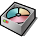
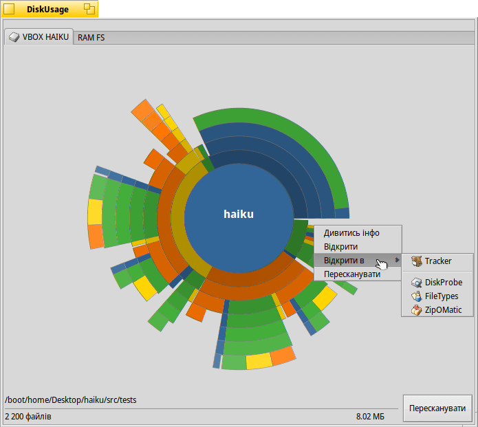

 DiskUsage (Використання диска)
| Deskbar: | ||
| Розташування: | /boot/system/apps/DiskUsage | |
| Налаштування: | ~/config/settings/DiskUsage |
DiskUsage у графічній формі показує,
як використовується дисковий простір на Ваших томах.
Корисний інструмент для відповіді на запитання "Куди поділося вільне місце на моєму диску?".
Після запуску DiskUsage показує лише порожнє вікно з усіма підключеними (змонтованими) томами у вигляді вкладок у верхній частині. Вам потрібно вибрати той, який вас цікавить, і натиснути кнопку , щоб почати процес сканування диска. Для великих за розміром дисків це може зайняти деякий час… Поки Ви чекаєте, можете перейти на іншу вкладку і почати досліджувати інший том або почати процес сканування і на ньому.
Не рекомендується запускати кілька паралельних процесів сканування на одному фізичному диску, оскільки постійне переміщення головок диска лише подовжить час очікування.

Концентричні кола представляють собою різні рівні в ієрархії файлової системи. Центральне коло позначає каталог /boot/home/Desktop/haiku. Кожен сегмент кільця безпосередньо за цим колом є файлом або папкою в /boot/home/Desktop/haiku/. Кожен сегмент, що знаходиться далі, переносить Вас на один рівень глибше у файловій ієрархії. Можливо, Вам доведеться змінити розмір вікна, щоб вмістити глибоко вкладені підкаталоги.
- Якщо графічне представлення файлу стає меншим ніж 2°, то воно не відображається.
- Кількість файлів, що декларується для папки, включає також і файли у вкладених папках. Папка рахується як файл.
- DiskUsage ігнорує символьні посилання.
Коли Ви наводите курсор миші на сегмент, у рядку стану внизу вікна з’являється інформація про цей файл або папку.
Правий клік миші по сегменту викликає контекстне меню з пунктами , (у Tracker), в іншій придатній програмі або папки цього сегменту.
Якщо зробити лівий клік миші по сегменту, цей файл/папка стане центральним колом.
Лівий клік миші по центральному колу переміщує на один рівень ієрархії вгору.
Ви можете перетягувати файли та папки з DiskUsage в інші програми або на робочий стіл чи інші вікна Tracker для копіювання. І навпаки, скинуті у вікно DiskUsage томи і каталоги стануть новим центральним колом а саме вікно буде масштабовано безпосередньо до них.
До того ж можна скористатися доповненням Tracker із контекстного меню будь-якої папки, щоб запустити DiskUsage із цього конкретного розташування.